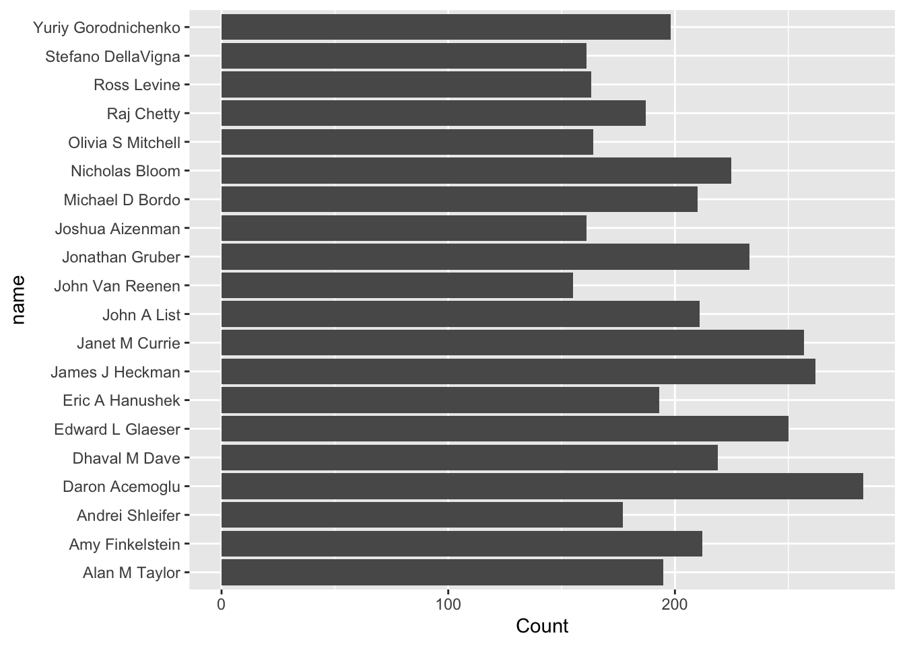
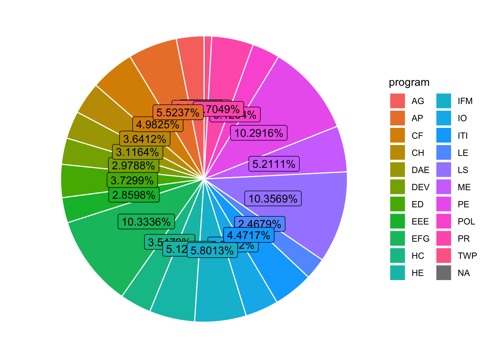

##
## Attaching package: 'dplyr'## The following objects are masked from 'package:stats':
##
## filter, lag## The following objects are masked from 'package:base':
##
## intersect, setdiff, setequal, unionlibrary(ggplot2)
combo_df <- readr::read_csv('https://raw.githubusercontent.com/rfordatascience/tidytuesday/master/data/2021/2021-09-28/combo_df.csv',show_col_types = FALSE)
combo_df## # A tibble: 130,081 × 12
## paper catalogue_group year month title author name user_nber user_repec
## <chr> <chr> <dbl> <dbl> <chr> <chr> <chr> <chr> <chr>
## 1 w0001 General 1973 6 Educatio… w0001… Fini… finis_we… <NA>
## 2 w0002 General 1973 6 Hospital… w0002… Barr… barry_ch… pch425
## 3 w0003 General 1973 6 Error Co… w0003… Swar… swarnjit… <NA>
## 4 w0004 General 1973 7 Human Ca… w0004… Lee … <NA> pli669
## 5 w0005 General 1973 7 A Life C… w0005… Jame… james_sm… psm28
## 6 w0006 General 1973 7 A Review… w0006… Vict… victor_z… <NA>
## 7 w0007 General 1973 8 The Defi… w0007… Lewi… <NA> <NA>
## 8 w0008 General 1973 9 Multinat… w0008… Merl… <NA> <NA>
## 9 w0008 General 1973 9 Multinat… w0008… Robe… robert_l… pli259
## 10 w0009 General 1973 9 From Age… w0004… Lee … <NA> pli669
## # … with 130,071 more rows, and 3 more variables: program <chr>,
## # program_desc <chr>, program_category <chr>## paper catalogue_group year month
## Length:130081 Length:130081 Min. :1973 Min. : 1.000
## Class :character Class :character 1st Qu.:2005 1st Qu.: 4.000
## Mode :character Mode :character Median :2013 Median : 6.000
## Mean :2010 Mean : 6.515
## 3rd Qu.:2018 3rd Qu.: 9.000
## Max. :2021 Max. :12.000
## title author name user_nber
## Length:130081 Length:130081 Length:130081 Length:130081
## Class :character Class :character Class :character Class :character
## Mode :character Mode :character Mode :character Mode :character
##
##
##
## user_repec program program_desc program_category
## Length:130081 Length:130081 Length:130081 Length:130081
## Class :character Class :character Class :character Class :character
## Mode :character Mode :character Mode :character Mode :character
##
##
## # The goal is to find out the top 20 productive authors in the past 2 decades
recent_data = combo_df %>% filter(year>=2001)
author_ranking = recent_data %>% group_by(name) %>% summarise(Count = n()) %>% arrange(desc(Count))
# top 20 author list and barchart
author_ranking[0:20,]## # A tibble: 20 × 2
## name Count
## <chr> <int>
## 1 Daron Acemoglu 283
## 2 James J Heckman 262
## 3 Janet M Currie 257
## 4 Edward L Glaeser 250
## 5 Jonathan Gruber 233
## 6 Nicholas Bloom 225
## 7 Dhaval M Dave 219
## 8 Amy Finkelstein 212
## 9 John A List 211
## 10 Michael D Bordo 210
## 11 Yuriy Gorodnichenko 198
## 12 Alan M Taylor 195
## 13 Eric A Hanushek 193
## 14 Raj Chetty 187
## 15 Andrei Shleifer 177
## 16 Olivia S Mitchell 164
## 17 Ross Levine 163
## 18 Joshua Aizenman 161
## 19 Stefano DellaVigna 161
## 20 John Van Reenen 155
# The goal is to find out the top 10 programs contributing to the research in the past 2 decades
# extract paper and program column
pg = recent_data %>% select(paper,program)
# a paper may have multiple observations (rows), have to remove duplicates so we only count a contributing program once per paper
program_data = pg %>% distinct()
program_ranking = program_data %>% group_by(program) %>% summarise(Count = n()) %>% arrange(desc(Count))
# top 10 program list
program_ranking[0:10,]## # A tibble: 10 × 2
## program Count
## <chr> <int>
## 1 LS 4440
## 2 EFG 4430
## 3 PE 4412
## 4 IFM 2487
## 5 AP 2368
## 6 ME 2234
## 7 HE 2195
## 8 CF 2136
## 9 PR 2017
## 10 ITI 1917df2 <- program_data %>%
group_by(program) %>% # Variable to be transformed
count() %>%
ungroup() %>%
mutate(perc = `n` / sum(`n`)) %>%
arrange(perc) %>%
mutate(labels = scales::percent(perc))
# make a piechart
ggplot(df2, aes(x="", y=perc, fill=program)) +
geom_col() +
coord_polar(theta = "y") +
geom_bar(stat="identity", width=1, color="white") +
theme_void() +
geom_label(aes(label = labels), position = position_stack(vjust = 0.5), show.legend = FALSE)